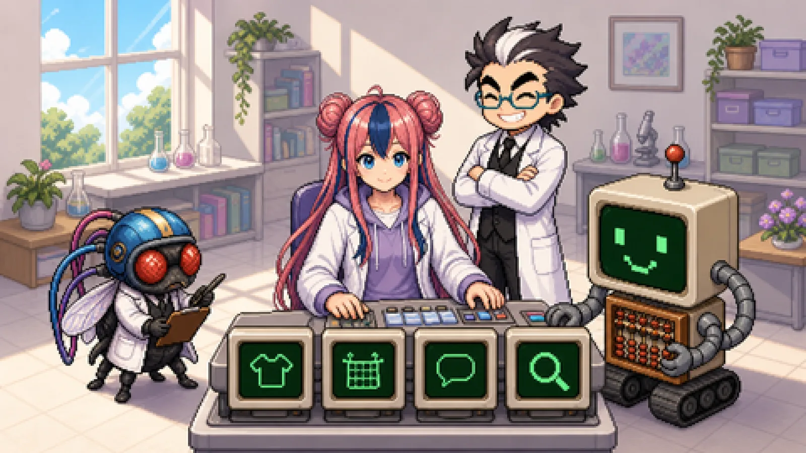
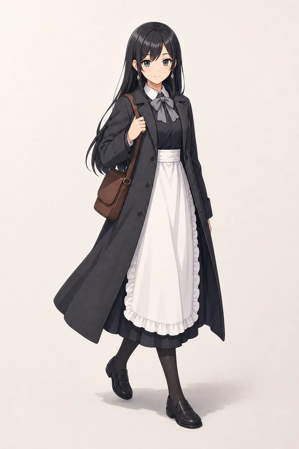
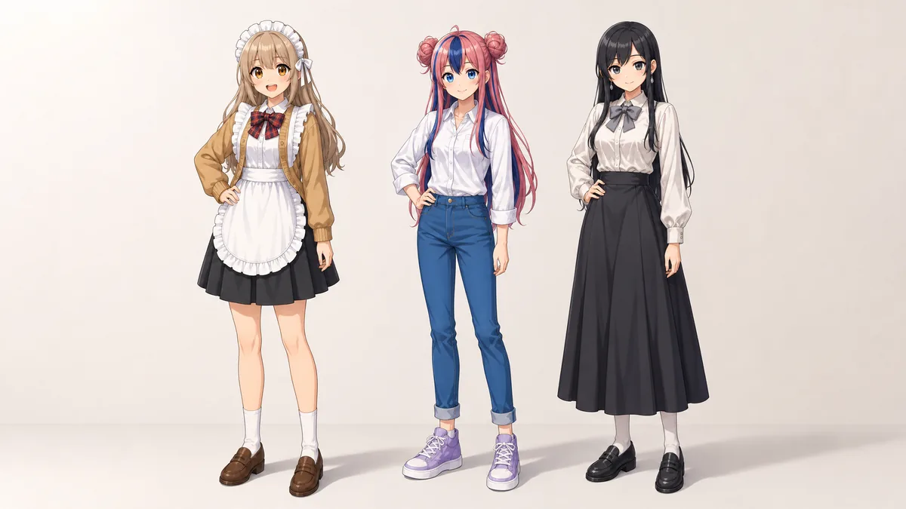

네 곳의 작업장을 직접 운영합니다. 초록 조작판은 주어진 환경, 파랑 조작판은 내 결정입니다. 미션은 직접 조작해야 판정됩니다.
배운 곳 다시 보기: 2부 1단계 여유율 · 2부 3단계 몸의 볼륨 · 3부 4단계 겹쳐 입기
배운 곳 다시 보기: 3부 1단계 두께와 간격 · 5부 3단계 VFX 소재표
배운 곳 다시 보기: 5부 1단계 옷 고정 문장 · 5부 4단계 화풍별 양
'직접 만들어 보기'가 이 페이지 그림을 다시 만들어 보는 것이었다면, 연습 문제는 새 상황을 스스로 풀어 보는 것입니다. 정답 그림은 하나가 아니므로, 아래 '예상 결과'는 완성 예시 프롬프트로 실제로 만든 한 가지 예입니다.
참고 그림 내려받기: haru_anime_base · sia_anime_base · moa_anime_base · haru_sheet · sia_sheet · moa_sheet · doctor_sheet · fruitfly_sprites_6 · jupanbot_ref_genspark_v0 · pixel_style_ref_prev_cover
1~5부 원리를 한 장에 모읍니다. 연습장 공방에서 여섯 조각 문장을 조립하고, 소재(두꺼운 울)·소품 접점(숄더백)·동작(걷기)이 동시에 맞는지 확인합니다.
두꺼운 울 코트 → 굵은 주름 몇 개, 앞판 매끈.
숄더백 끈이 어깨를 누름 → 끈 아래 주름. 걷기 → 코트 밑단이 조금 뒤로 흐름.
① [울 코트] ② [보통 핏] ③ [두꺼운 울, 굵은 주름 몇 개] ④ [걷기 + 숄더백: 끈 아래 주름, 밑단 뒤로] ⑤ [빛] ⑥ [금지]
첨부: refs/sia_anime_base.png, refs/sia_sheet.png
Illustration, vertical 2:3. Art style: high-quality anime illustration, clean confident lineart, two-tone cel shading with a darker second shadow only in the deepest folds, natural adult proportions. Match the attached reference images exactly (face, hair, colors, accessories). All characters are adults in their early twenties (the Professor is an adult man); modest outfits exactly as described. Full body of Sia (adult maid intern, long straight jet-black hair, no headdress, gray eyes, small silver earrings), wearing a thick heavy charcoal-gray wool coat (regular fit) over her maid dress, black tights and black shoes, walking to the right carrying a brown leather shoulder bag. The thick wool makes only a few broad folds; the bag strap presses into the shoulder with folds radiating from it; the coat hem swings slightly backward with the motion. Light from the upper left. Plain off-white studio background or a bright clean lab interior. No text, no letters, no numbers, no logos, no watermark, no revealing clothing, not childlike, no school uniform, not resembling any famous anime character.

두꺼운 회색 코트는 굵은 주름 몇 개로 묵직하고, 어깨에는 가방 끈이 파고든 자리에서 주름이 퍼집니다. 걷는 방향 반대로 코트 밑단이 살짝 흔들려 움직임이 느껴집니다.
실제로 나온 결과 — 두꺼운 코트의 굵은 주름, 어깨에 걸린 가방 끈, 걷는 동작이 한 장에 함께 나왔습니다. 코트 앞으로 앞치마가 보여 시아다움도 지켜졌습니다.
| 증상 | 같은 대화에 이어 붙일 문장 |
|---|---|
| 세 원리 중 하나가 빠졌다 | 빠진 조각 하나만 'Same image. Change only: …'로 고칩니다. 한 번에 여러 개를 고치면 다른 곳이 다시 흔들립니다. |
| 코트가 메이드복을 덮어 시아답지 않다 | Same image. Change only: the white frilled apron hem and the maid dress collar bow are visible at the coat opening. |
니트(모아)·빳빳한 셔츠(하루)·실크 블라우스(시아)를 한 장에 세우고, 같은 빛 아래에서 소재마다 주름 간격과 그림자 모양이 달라지는지 확인합니다.
둥근 주름, 둥근 그림자.
셔츠는 각진 마름모 그림자, 실크는 가는 잔주름과 긴 처짐.
세 사람 / [모아: 니트] [하루: 빳빳한 면 셔츠] [시아: 실크 블라우스] / 모두 [같은 자세 계열], [같은 빛]
첨부: refs/moa_anime_base.png, refs/haru_anime_base.png, refs/sia_anime_base.png
Illustration, wide 16:9. Art style: high-quality anime illustration, clean confident lineart, two-tone cel shading with a darker second shadow only in the deepest folds, natural adult proportions. Match the attached reference images exactly (face, hair, colors, accessories). All characters are adults in their early twenties (the Professor is an adult man); modest outfits exactly as described. Three characters standing side by side, full body, each in a different fabric: Moa (adult maid intern, long ash-beige wavy hair, white frilled maid headband with a white ribbon over her LEFT ear, amber eyes), wearing a camel chunky knit sweater and a black skirt — broad rounded folds and rounded soft shadows; Haru (adult lab assistant, long straight pink hair with navy streaks and a thick navy streak down the center of the bangs, two round hair buns on top, small ahoge, big blue eyes), wearing a crisp white cotton button-up shirt and rolled-up jeans — sharp angular folds with diamond- and triangle-shaped shadows; Sia (adult maid intern, long straight jet-black hair, no headdress, gray eyes, small silver earrings), wearing a light ivory silk blouse with long sleeves and a black skirt — many fine flowing folds and long soft drape. All three lit by the same soft light from the upper left. Moa keeps her white frilled headband and the ribbon over her LEFT ear. Plain off-white studio background or a bright clean lab interior. No text, no letters, no numbers, no logos, no watermark, no revealing clothing, not childlike, no school uniform, not resembling any famous anime character.

같은 빛 아래에서 모아의 니트는 포근하게 둥글고, 하루의 셔츠는 다림질한 듯 각지며, 시아의 실크는 가는 주름이 길게 흐릅니다. 소재만 달라도 세 사람의 인상이 확연히 다릅니다.
실제로 나온 결과 — 하루의 빳빳한 셔츠와 시아의 부드러운 블라우스는 구별되지만, 모아는 니트 스웨터 대신 원래의 카디건·앞치마 차림으로 나왔습니다. 캐릭터 고정값을 지키느라 옷 지시가 밀린 사례입니다. 모아만 따로 'Change only: chunky knit sweater'로 고쳐 보세요.
| 증상 | 같은 대화에 이어 붙일 문장 |
|---|---|
| 세 소재가 비슷해 보인다 | Same image. Change only: exaggerate the difference — knit rounded, cotton angular with diamond shadows, silk fine and flowing. |
| 빛 방향이 사람마다 다르다 | Same image. Change only: one light source from the upper left for all three. |
피팅룸에서 정한 여유율과 자세는 공방의 옷 문장에서 '핏'과 '동작·접점'이 되고, 소재 실험실의 값은 '소재' 문장과 VFX 소재표가 됩니다. 진단 데스크에서 틀린 원인은 대부분 앞의 세 곳 중 하나가 빠진 경우입니다. 옷 그림은 결국 천이 어디에 걸려(접점), 얼마나 남아서(핏), 어떻게 접히는가(소재·동작)의 기록입니다.
실제 그림으로 이어 가기 — 옷 문장 공방에서 조립한 문장을 복사해 그림 생성 AI에 넣어 보세요. 결과는 각 부의 '프롬프트로 직접 만들어 보기' 확인표로 점검합니다: 1부 · 2부 · 3부 · 4부 · 5부 · 6부
한계: 이 연습장의 주름 수·밑단 높이·천 계산은 원리를 보이기 위해 크게 단순화했습니다. 숫자는 교육용 예시이며, 실제 옷과 도구의 값과 다릅니다.
이 페이지에 나온 개념·방법·비유·쓰임을 모았습니다. 검색하고, "설명 보러 가기"로 본문에 돌아갑니다.
지식 색인을 출처와 함께 파일로 내려받습니다. 서지 관리는 BibTeX·RIS, 온톨로지 편집은 Turtle, 그래프 도구는 CSV, 여러 페이지 합치기는 kg.json입니다.